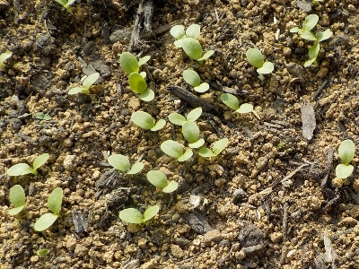
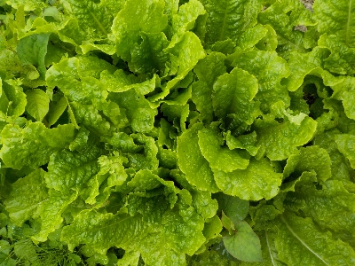
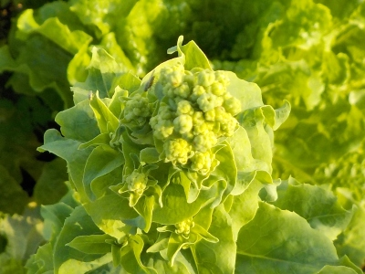

サンチュのタネを育苗箱に蒔いたら、沢山発芽しました。
更新日 : 2026/03/28

こんなに沢山発芽するんだったら地植えでよかったです。
育苗箱で移植するなんて無駄な作業でした。
まだ採取した種は沢山あるので、またどこかに種をまこうと思います。
更新日 : 2026/03/28

こんなに沢山発芽するんだったら地植えでよかったです。
育苗箱で移植するなんて無駄な作業でした。
まだ採取した種は沢山あるので、またどこかに種をまこうと思います。
更新日 : 2026/06/08

近頃毎日サンチュを沢山食べています。
家の緑色の野菜が少ない時期なので、なんとか食べれるかなってくらいの多さです。
育てるのに手間がかかっていないので、毎年タネを蒔いて大量に食べるのは有りですね。
更新日 : 2026/06/28

葉っぱの色が変わったのでこのサンチュはもう食べれません。また花を咲かせてタネを採ろうかな。
育苗箱で育てて植え替えたサンチュは成長が遅かったのでまだ食べれます。でもそろそろ終わるかな。
レタス系は虫があまり付かないからいいですよね。ナメクジが敵ですね。